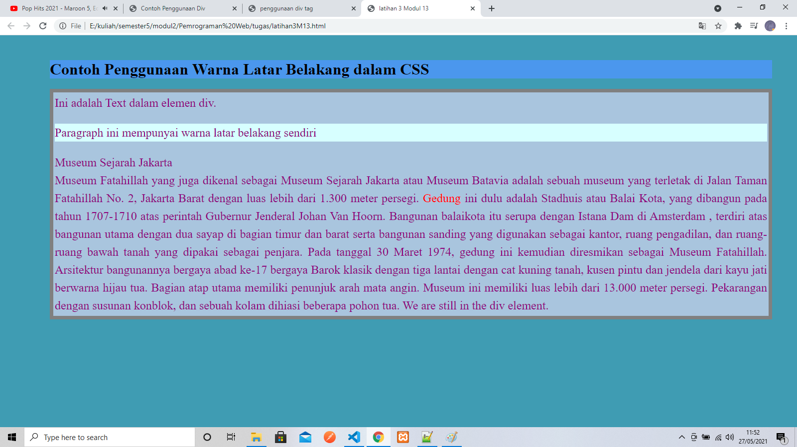

Pertemuan 11
Latihan 1
<xmp> ====================================================== <!DOCTYPE html> <html lang="en"> <head> <meta charset="UTF-8" /> <meta http-equiv="X-UA-Compatible" content="IE=edge" /> <meta name="viewport" content="width=device-width, initial-scale=1.0" /> <title>latihan 1 Modul 11</title> <link rel="stylesheet" href="layouts.css" /> </head> <body> <h3>Latihan 1 Modul 11</h3> <h1>Sejarah Banten</h1> <div> <p>Kerajaan Banten adalah salah satu kerajaan Islam di Pulau Jawa. Kerajaan ini menguasai wilayah Banten yang terletak di barat Pulau Jawa.</p> <p>Sebelumnya wilayah Banten merupakan bagian dari Kerajaan Sunda yang bercorak Hindu.</p> <p>HJ de Graaf dalam bukunya Kerajaan-kerajaan Islam Pertama di Jawa (1985) menuturkan kerajaan Banten berdiri di abad ke-16.</p> <p>Pada tahun 1524 atau 1525, Nurullah dari Pasai yang kelak menjadi Sunan Gunung Jati berlayar dari Demak ke Jawa Barat.</p> <p>Saat itu, pusat pengembangan agama Islam di Jawa masih terpusat di Demak. Sunan Gunung Jati dan putranya Hasanuddin melebarkan pengaruh Islam ke barat Pulau Jawa.</p> </div> </body> </html> </xmp>
Hasil Dari Script Tersebut

<<<<< Back To Menu